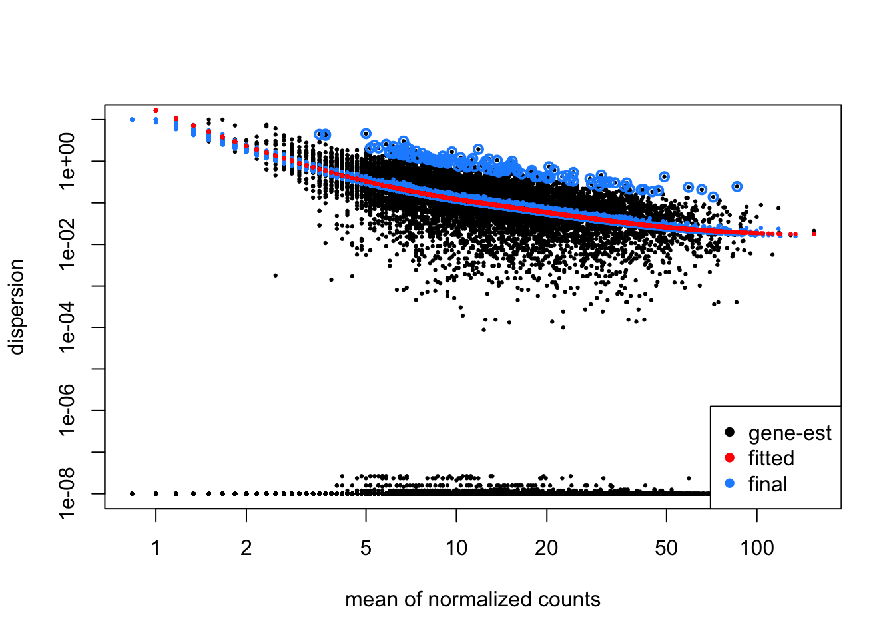
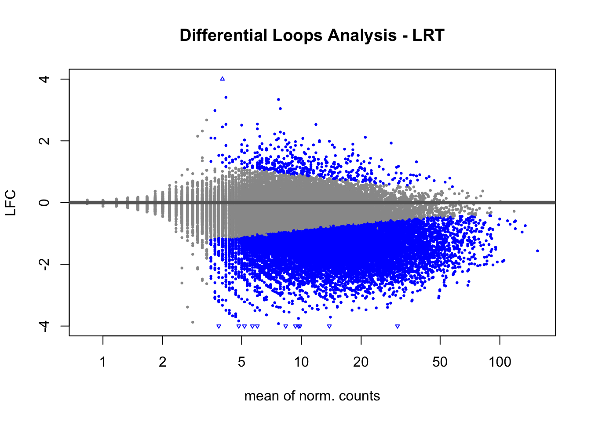

Code
library(DESeq2)
library(dplyr)
library(glue)
library(stringr)
library(purrr)
library(pheatmap)
library(apeglm)library(DESeq2)
library(dplyr)
library(glue)
library(stringr)
library(purrr)
library(pheatmap)
library(apeglm)loopCounts <- readRDS("~/Phanstiel Lab Dropbox/JP Flores/projects/YAPP/YAPP/data/processed/hic/YAPP_hic_loopCounts.rds")Adding column loop_name to metadata.
## add a loop_count column
loopCounts$loop_name <- glue("loop_{1:length(loopCounts)}")Loading required package: InteractionSetFrom the metadata cols of loopCounts, pull out the inter_30.hic files and create a matrix.
m <- mcols(loopCounts)[, grep("*inter.*", colnames(mcols(loopCounts)))] %>%
as.matrix()
tail(m) YAPP_HEK_control_1_2_inter_30.hic YAPP_HEK_control_2_2_inter_30.hic
[40109,] 2 4
[40110,] 7 5
[40111,] 9 9
[40112,] 8 9
[40113,] 2 0
[40114,] 7 2
YAPP_HEK_control_3_2_inter_30.hic YAPP_HEK_sorbitol_4_2_inter_30.hic
[40109,] 5 1
[40110,] 5 4
[40111,] 3 5
[40112,] 3 5
[40113,] 4 4
[40114,] 5 5
YAPP_HEK_sorbitol_5_2_inter_30.hic YAPP_HEK_sorbitol_6_2_inter_30.hic
[40109,] 2 2
[40110,] 5 5
[40111,] 1 2
[40112,] 14 7
[40113,] 4 7
[40114,] 3 2Using the information from our count matrix, we split the column names of the matrix at the underscore. This creates a list of 6 where each split string turns into a column name. We then bind the rows of each list to create a matrix. Finally, this matrix is converted into a data.frame.
The column names of our count matrix ultimately turns into the row names of our metadata table (colData). The column names are specified (Project, Cell Type, Treatment, and Replicate) and explicitly called.
## String split the colnames
colData <- as.data.frame(do.call(rbind, strsplit(colnames(m), "_")), stringsAsFactors = T)
rownames(colData) <- colnames(m)
colnames(colData) <- c("Project", "Cell_Type", "Treatment", "Replicate")
colData <- colData[, c(1:4)]
## Correct replicate number
colData <- colData |>
mutate(Replicate = str_replace(Replicate, "4", "1")) |>
mutate(Replicate = str_replace(Replicate, "5", "2")) |>
mutate(Replicate = str_replace(Replicate, "6", "3"))
print(colData) Project Cell_Type Treatment Replicate
YAPP_HEK_control_1_2_inter_30.hic YAPP HEK control 1
YAPP_HEK_control_2_2_inter_30.hic YAPP HEK control 2
YAPP_HEK_control_3_2_inter_30.hic YAPP HEK control 3
YAPP_HEK_sorbitol_4_2_inter_30.hic YAPP HEK sorbitol 1
YAPP_HEK_sorbitol_5_2_inter_30.hic YAPP HEK sorbitol 2
YAPP_HEK_sorbitol_6_2_inter_30.hic YAPP HEK sorbitol 3In order to confirm that the column names of our count matrix is equal to the row names of our metadata table, we can run an all() function.
## Make sure sample names match
all(colnames(m) == rownames(colData))[1] TRUEBecause we created matrices, we use the DESeqDataSetFromMatrix() function. We also need to specify a design formula. The design formula specifies the column(s) in the metadata table and how they should be used in the analysis. A design formula tells the statistical software the known sources of variation to control for, as well as, the factor of interest to test for during differential expression testing. The design formula should have all of the factors in your metadata that account for major sources of variation in your data. The last factor entered in the formula should be the condition of interest.
dds <- DESeqDataSetFromMatrix(countData = m,
colData = colData,
design = ~ Replicate + Treatment)Rather than using DESeq()’s default normalization method (Median of ratios method), we can turn this off by setting the size factors of our dds object manually. Here, we set the size factors of each column to 1.
THIS IS THE DIFFERENCE MAKER!
sizeFactors(dds) <- rep(1, ncol(dds))After turning normalization off, we can then use the DESeq() function. Here, we will try using both the Wald test and LRT test.
## Hypothesis testing with Wald with `betaPrior = F`
dds_W <- DESeq(dds)## Hypothesis testing with LRT
dds_LRT <- DESeq(dds, test = "LRT", full= ~ Replicate + Treatment, reduced = ~ Replicate)## results from LRT test
res_LRT <- results(dds_LRT)
resultsNames(dds_LRT)
res_LRT <- lfcShrink(dds_LRT, coef="Treatment_sorbitol_vs_control", type= "apeglm")summary(res_LRT)
out of 40114 with nonzero total read count
adjusted p-value < 0.1
LFC > 0 (up) : 443, 1.1%
LFC < 0 (down) : 14909, 37%
outliers [1] : 0, 0%
low counts [2] : 3067, 7.6%
(mean count < 4)
[1] see 'cooksCutoff' argument of ?results
[2] see 'independentFiltering' argument of ?results## results from Wald test
res_W <- results(dds_W)
resultsNames(dds_W)
res_W <- lfcShrink(dds_W, coef="Treatment_sorbitol_vs_control", type= "apeglm")summary(res_W)
out of 40114 with nonzero total read count
adjusted p-value < 0.1
LFC > 0 (up) : 435, 1.1%
LFC < 0 (down) : 14818, 37%
outliers [1] : 0, 0%
low counts [2] : 3533, 8.8%
(mean count < 4)
[1] see 'cooksCutoff' argument of ?results
[2] see 'independentFiltering' argument of ?resultsThe next step in the workflow is to fit a curve to the dispersion estimates for each gene. The idea behind fitting a curve to the data is that different genes will have different scales of biological variability, but, over all genes, there will be a distribution of reasonable estimates of dispersion.
This curve is displayed as a red line in the figure below, which plots the estimate for the expected dispersion value for genes of a given expression strength. Each black dot is a gene with an associated mean expression level and maximum likelihood estimation (MLE) of the dispersion (Step 1).
## Plot dispersion estimates for LRT results
plotDispEsts(dds_LRT)
## Plot dispersion estimates for Wald Test results
plotDispEsts(dds_W)plotMA(res_LRT, ylim=c(-4,4), main = "Differential Loops Analysis - LRT",
ylab = "LFC",
xlab = "mean of norm. counts")
plotMA(res_W, ylim=c(-4,4), main = "Differential Loops Analysis - Wald",
ylab = "LFC",
xlab = "mean of norm. counts")This report was created to compare the differences between using the Wald test, the LRT test, and different normalization methods.